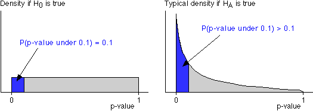

P-values and probability
We saw in the last page that p-values have a rectangular distribution between 0 and 1 when H0 holds. A consequence of this is that the probability of obtaining a p-value of 0.1 or lower is exactly 0.1 (when H0 holds). This is illustrated on the left of the diagram below.

Similarly, the probability of obtaining a p-value of 0.01 or lower is exactly 0.01, etc. (when H0 holds).
P-values are most likely to be near 0 if the alternative hypothesis holds
Again, we use the specific hypothesis test for
| null hypothesis H0 : | µ = 0 |
| alternative hypothesis HA : | µ ≠ 0 |
in order to demonstrate these general results.
Click the button Take sample 50 or more times to take samples from this population and add their p-values to the display on the right. From the diagram on the top right, we can read off the proportion of p-values that are less than any value. Approximately 50% of p-values are less than 0.5, 20% are less than 0.2, etc. when the null hypothesis is true.
Use the slider to change the true population mean to 1.5 and repeat. From the diagram on the top right, you should observe that more than 50% of p-values are less than 0.5, more than 20% are less than 0.2, etc. when the alternative hypothesis holds.
Interpretation of p-value
Remembering that low p-values favour HA more than H0, we can give the following interpretation to a p-value.
If a data set gives rise to a p-value of say 0.0023, we can state that the probability of getting a data set with such a low p-value is only 0.0023 if H0 is true. Since such a low p-value is so unlikely, the data give strong evidence that H0 does not hold.
Of course, we may be wrong. A p-value of 0.0023 could arise when either H0 or HA holds. However it is unlikely when H0 is true and more likely when HA is true.
Similarly, p-value that is as low as 0.4 occurs with probability 0.4 when the null hypothesis holds. Since this is fairly high, we conclude from a data set that gave rise to a p-value of 0.4 that there is no evidence that the null hypothesis does not hold.
Although it may be regarded as an over-simplification, the table below may be used as a guide to interpreting p-values.
| p-value | Interpretation |
|---|---|
| over 0.1 | no evidence that the null hypothesis does not hold |
| between 0.05 and 0.1 | very weak evidence that the null hypothesis does not hold |
| between 0.01 and 0.05 | moderately strong evidence that the null hypothesis does not hold |
| under 0.01 | strong evidence that the null hypothesis does not hold |